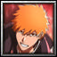

Hero statistics · Season 2
『斬撃の花』
FSA MCB · Recorded ranked matches
Recorded picks11
Win rate18%
Avg K / D / A28.9 / 36.8 / 10.5
Avg damage dealt213.7k
Avg APM119
Players on this hero
Most picks first| # | PLAYER | PICKS | WIN RATE | AVG K / D / A |
|---|---|---|---|---|
| 1 | nazarian Blade | 2 | 0% | 40.0 / 43.5 / 11.5 |
| 2 | efreet17 V バージルースパーダの息子 | 1 | 100% | 39.0 / 40.0 / 16.0 |
| 3 | itadori#289 チェンソーマン | 1 | 100% | 34.0 / 35.0 / 16.0 |
| 4 | d4vd 復讐者 | 1 | 0% | 31.0 / 39.0 / 14.0 |
| 5 | gabriei 『斬撃の花』 | 1 | 0% | 15.0 / 42.0 / 6.0 |
| 6 |  moonfall 黒崎 一護 | 1 | 0% | 20.0 / 38.0 / 12.0 |
| 7 | rintak 朱雀院 紅葉 | 1 | 0% | 7.0 / 31.0 / 7.0 |
| 8 | sakiashizawa Seha Lee 2 | 1 | 0% | 40.0 / 40.0 / 6.0 |
| 9 | starking01 仮面ライダーゲンム | 1 | 0% | 28.0 / 32.0 / 9.0 |
| 10 | ygnizem 仮面ライダーカブト | 1 | 0% | 24.0 / 21.0 / 7.0 |
Recent matches
LOSS59:39
MCB #2000262
24 Nov 2026 · 01:20 WIB
31.0 / 39.0 / 14.0View match →
LOSS56:06
MCB #2000261
24 Nov 2026 · 00:12 WIB
20.0 / 38.0 / 12.0View match →
LOSS54:31
MCB #2000257
22 Nov 2026 · 20:57 WIB
7.0 / 31.0 / 7.0View match →
LOSS65:18
MCB #2000255
22 Nov 2026 · 18:14 WIB
40.0 / 40.0 / 6.0View match →
WIN64:13
MCB #2000243
19 Nov 2026 · 17:30 WIB
34.0 / 35.0 / 16.0View match →
WIN66:02
MCB #2000238
16 Nov 2026 · 23:01 WIB
39.0 / 40.0 / 16.0View match →
LOSS60:22
MCB #2000234
14 Nov 2026 · 23:29 WIB
15.0 / 42.0 / 6.0View match →
LOSS69:08
MCB #2000230
14 Nov 2026 · 00:16 WIB
52.0 / 41.0 / 10.0View match →
LOSS58:28
MCB #1000070
09 Nov 2026 · 01:28 WIB
28.0 / 32.0 / 9.0View match →
LOSS60:41
MCB #2000197
02 Nov 2026 · 20:03 WIB
24.0 / 21.0 / 7.0View match →